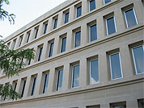

Mr. Squeegee Window Washing - Serving Portland, Oregon and surrounding areas Commercial Window Washing
Mr. Squeegee Cleaning Standards
All jobs are done with the highest of quality standards in mind. Our employees are taught proper, tested cleaning methods and are supervised at all times. Care is taken to protect furniture and floors during cleaning.
Office Buildings:
We train our window cleaners in the safe use of ladders and bucket trucks.
Again there is an endless array of the types of buildings we can service, but a few are: Hospitals, Universities, Real Estate, Doctors Clinics, Banks, Hotels-Motels, Lawyer's Buildings, Schools, Government Buildings (city, county, state, and federal).
Retail:
If you own a retail business then you know how important curb appeal is to your company. We can make sure that your windows are cleaned when you are closed or when your business is at its slowest. Our professional window cleaning staff is always courteous and on time. You can be assured that they will stop cleaning your front door and hold it open for your customers.
- Standard Services
- • Windows thoroughly cleaned, inside and outside.
- • Clean sliding door tracks.
- Additional services
- • Clean mirrors, chandeliers and other light fixtures.
- • Clean skylights, (inside and outside).
- • Clean awnings, (metal or cloth).
- • Pressure wash signs, concrete, brick and other exterior surfaces.
We use a professional window cleaning soap, that is unavailable to the public and 100% cotton, lint free toweling, which allows us to detail each window and mirror. The use of professionally designed ladders and equipment enables us to reach virtually all areas.